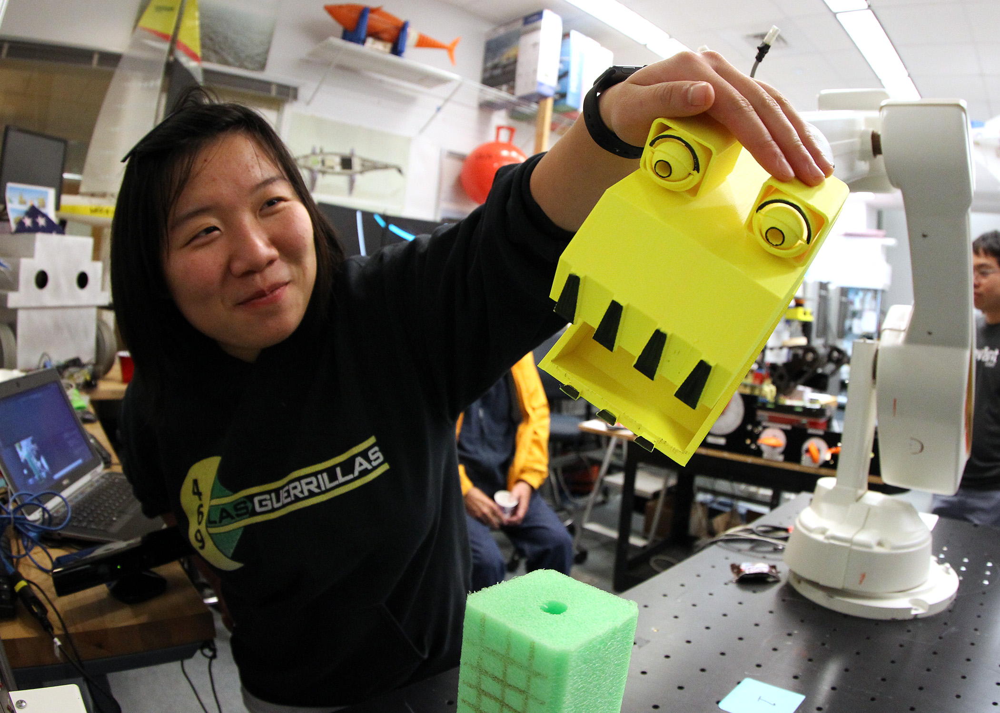
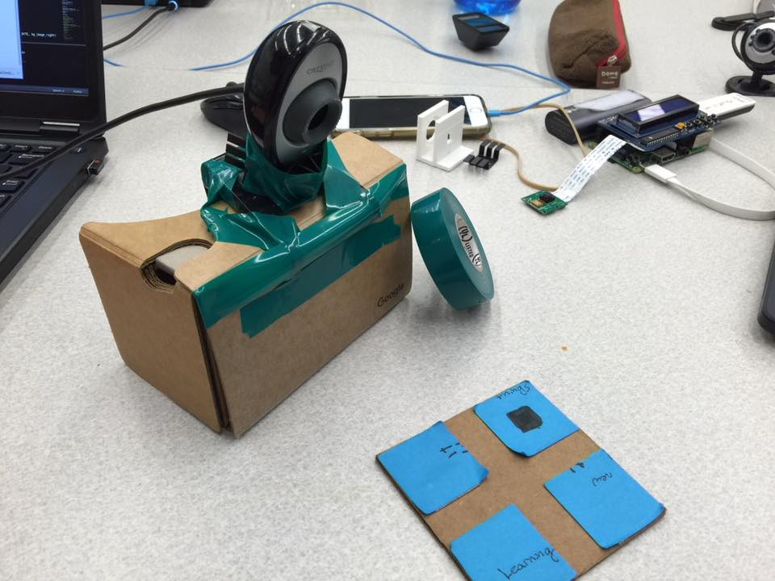
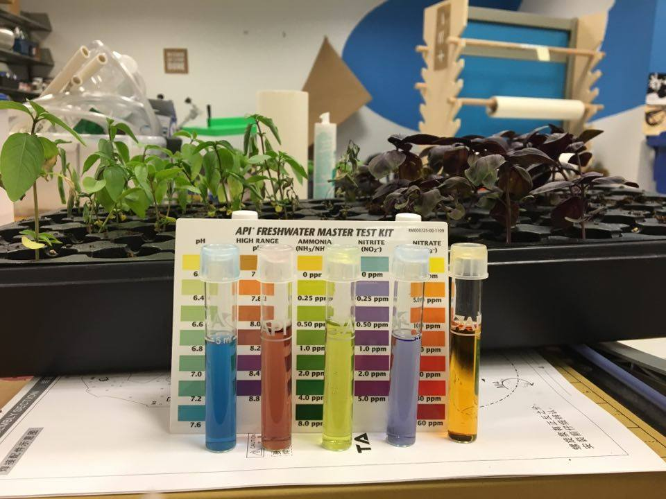
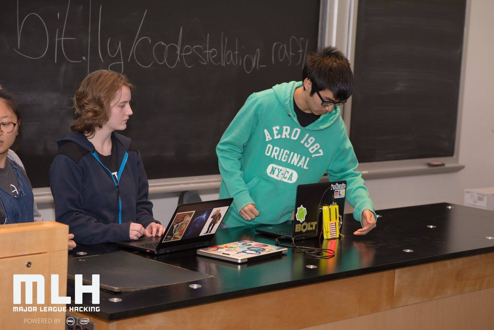
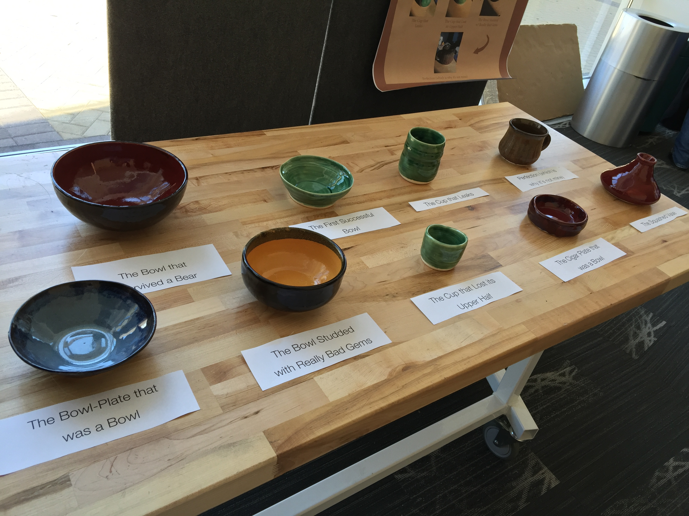
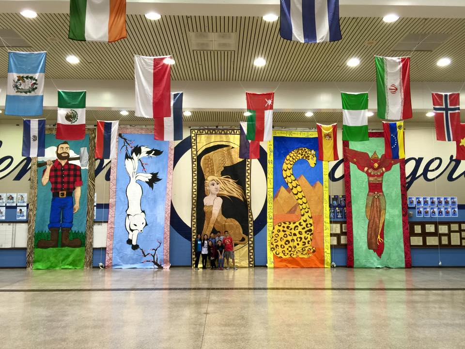
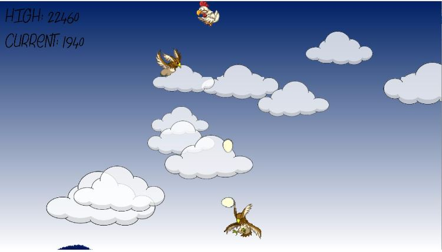
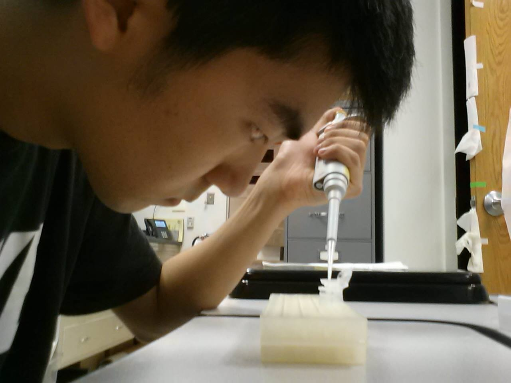
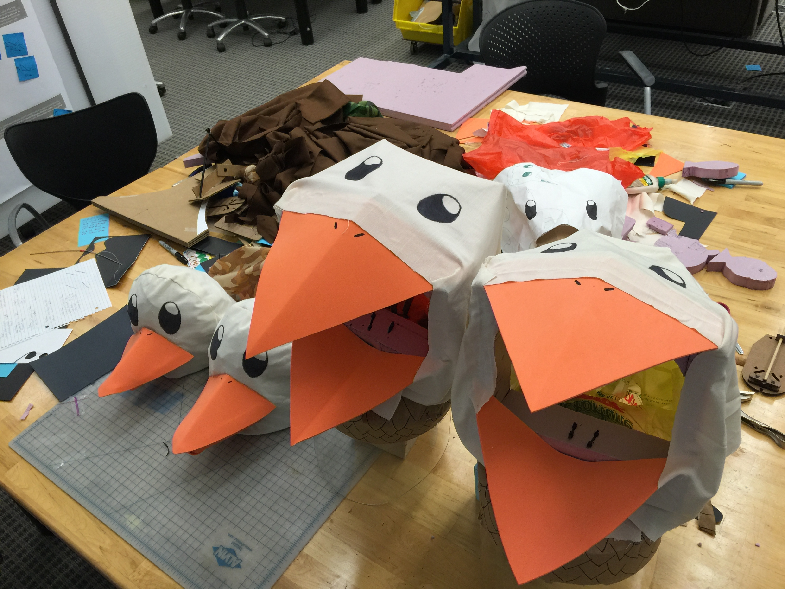

I am sophomore at Franklin W. Olin College of Engineering. While not declared, I plan to major in either General Engineering with a concentration in Computing, or Robotic Engineering. I am currently stuck in a love triangle between software and robots, and as a growing boy hungry for knowledge, I just can't say no to either one!
Despite my life struggles with these two lovely subjects, I do have an extensive software background. I have taken 4 years of formal training in Java programming, and I have also taken a college level course on Python. In addition, I have self-taught myself C++, JavaScript, CSS, HTML5, and some C, PHP, and SQL. I am also an extremely fast learner: I learned both HTML5 and JavaScript to a proficient level in about a week each, so I am confident that I can pick up other languages and nuances such as Ruby or advanced C quickly and be put to good use as soon as possible.
"Kevin ... worked on a system for helping with internal testing, interfacing with various sets of hardware and writing algorithms based on data received from said hardware. He jumped right into the challenge, learning the project background quickly, and contributed significantly to the success of the project ... The work resulted in a technology concept which will add to the patent portfolio at Ivani. Kevin’s natural intelligence and commitment to the company were evident throughout the summer. He naturally adapted to our culture, while impacting it in a positive way. Having Kevin work with us for the summer was awesome, and I would not hesitate in recommending him to future employers."
- Matthew Wootton, Chief Technology Officer at Ivani LLC
Most recently, I have worked for Ivani, a startup company in Missouri that specializes in sensor technology and home automation. In the past, I have worked as a Treasury Intern for Boxer Property Management Corporation and have done research at University of Texas on zebrafish and optic proteins. I have also collaborated on side projects such as recreating the popular mobile app game '2048'. Presently, I am involved in a multitude of activities at Olin, such as Electrical Vehicles, Aquaponics, and Robotics. I also actively compete in Hackathons and continue to work on side projects, such as learning graphic design, exploring web development, and building a personal electric GoKart to drive to the dining hall.
For fun, I like to explore various cool events around campus, such as Co-Curriculars, fun no credit classes where professors teach others about their hobbies, such as pottery or fermentation. In my free time, I enjoy playing frisbee and tennis, listening to music, learning new things about software and robots, cooking, hanging out with friends, and daydreaming about chickens (they're kind of my thing :P).
"Kevin is a detailed-oriented, and accurate intern. He was eager to learn the Boxer Property Systems and quickly grasped the Income Statement and Balance Sheet. We utilized him on several projects including the development of Project Proforma Worksheets, Pricing Analysis and Product Review. Kevin will be a great addition to any organization."
- Brett Scholz, Chief Financial Officer at Boxer Property